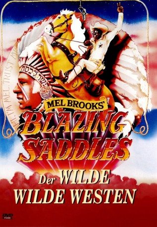
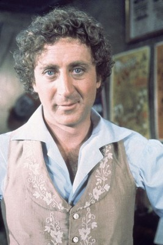
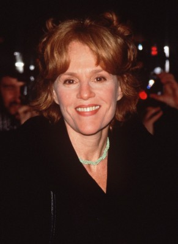
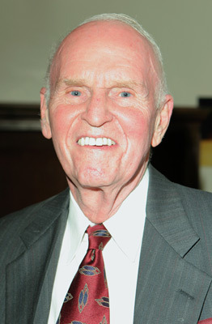
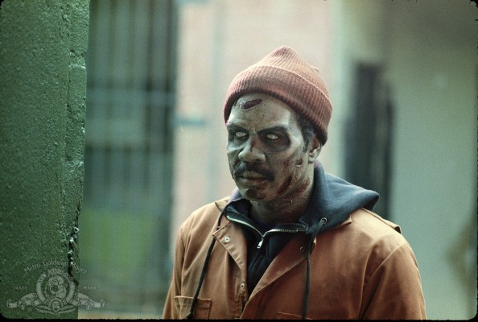
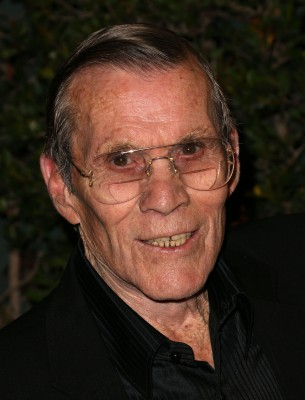
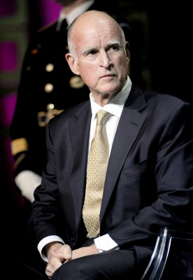

#2122 Mel Brooks' Blazing Saddles - Der wilde wilde Westen
Alternativ: Blazing Saddles
Auszeichnungen: für 3 Oscars nominiert
 
 IMDB-Wertung: 7.8 / 10
IMDB-Wertung: 7.8 / 10  Metascore: 73
Metascore: 73 
US-amerikanische Westernkomödie von und mit Mel Brooks. Ein kleines Wildwest-Städtchen wird von Banditen überfallen, die die Stadt in Angst und Schrecken versetzen um es für den geplanten Eisenbahnbau beseite zu schaffen. Schliesslich gelangen sie zu einem Filmstudio und stellen fest, dass es sich um eine Kulissenstadt handelt und sie alle in einem Film mitspielen. Oder war es doch anders?
Jahr: 1974
Dauer: 93 Minuten
FSK: 12
Land: USA Studio: Warner Bros.Tonspuren: DD1.0 - ,
Untertitel:
Auflösung: 1080p (1920x800) Größe: 7680 MB
Genre: Komödie, Western
Regisseur:  Mel Brooks
Mel Brooks
Drehbuch: Mel Brooks, Norman Steinberg, Andrew Bergman, Richard Pryor, Alan Uger
Soundtrack: John Morris
Darsteller:
- Cleavon Little als Bart
-  Gene Wilder als Jim
- Slim Pickens als Taggart
 Harvey Korman als Hedley Lamarr
Harvey Korman als Hedley Lamarr-  Madeline Kahn als Lili Von Shtupp
 Mel Brooks als Governor William J. Lepetomane / Indian Chief
Mel Brooks als Governor William J. Lepetomane / Indian Chief- Alex Karras als Mongo
 David Huddleston als Olson Johnson
David Huddleston als Olson Johnson John Hillerman als Howard Johnson
John Hillerman als Howard Johnson-  George Furth als Van Johnson
- Jack Starrett als Gabby Johnson
- Carol Arthur als Harriett Johnson
- Robyn Hilton als Miss Stein
 Dom DeLuise als Buddy Bizarre
Dom DeLuise als Buddy Bizarre Anne Bancroft als Congregation Extra , uncredited
Anne Bancroft als Congregation Extra , uncredited-  Alex Brown als RR Worker , uncredited
- Aneta Corsaut als Tourist Mother , uncredited
 Richard Farnsworth als Sheriff , uncredited
Richard Farnsworth als Sheriff , uncredited Sally Kirkland als Cashier , uncredited
Sally Kirkland als Cashier , uncredited- Patrick Labyorteaux als Henry , uncredited
- Craig Littler als Tex , uncredited
-  Hal Needham als Outlaw , uncredited
- Rodney Allen Rippy als Bart - Age 5 , uncredited
- Darrell Sandeen als KKK Man , uncredited
 Burton Gilliam als Lyle
Burton Gilliam als Lyle Liam Dunn als Rev. Johnson
Liam Dunn als Rev. Johnson- Richard Collier als Dr. Sam Johnson
- Charles McGregor als Charlie
- Don Megowan als Saloon Patron on Stage with Lili
- Count Basie als Himself
- Karl Lukas als Cutthroat #1
- John Alderson als Gum Chewer , uncredited
- Don Ames als Townsman , uncredited
- Tom Anfinsen als German Soldier , uncredited
- David Armstrong als Pressman , uncredited
- Herman Boden als Cowboy , uncredited
- Nick Borgani als Townsman , uncredited
-  Jerry Brown als Stage Driver , uncredited
- Eldon Burke als Desperado , uncredited
- David Cadiente als Mexican , uncredited
- Patrick Campbell als MC at Show , uncredited
- Bill Catching als Outlaw #1 , uncredited
- Ray Chabeau als German Soldier Dancer , uncredited
- Donald Chaffin als Townsman , uncredited
- Jack Clinton als Official , uncredited
- Dick Crockett als Townsman #2 , uncredited
- Alfred DeSio als German Soldier Dancer , uncredited
- George Dockstader als Politician , uncredited
- Ross Dollarhyde als Desperado , uncredited
- Hobert Durham Jr. als Railroad Worker , uncredited
Datei: X:\HD-Western-1960-1979\Mel Brooks' Blazing Saddles - Der wilde wilde Westen (1974, FSK12, 1920x800).mkv seit 06.10.2015
Festplatte: HD Eastern+Western
 Es gibt insgesamt 110 Filme in der Gruppe 'HD-Western-1960-1979'
Es gibt insgesamt 110 Filme in der Gruppe 'HD-Western-1960-1979'